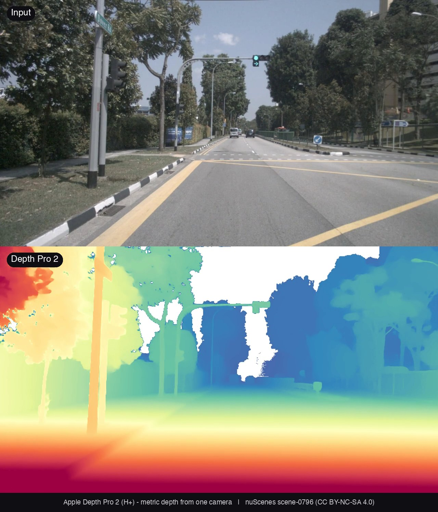
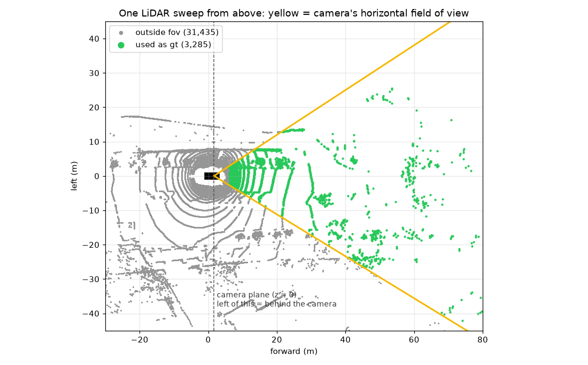

Depth Pro 2 on nuScenes front-camera driving data
What we built, how the ground truth and metrics are computed, what we assumed, what post-processing we apply, and what we found.
1. Summary
- Goal: estimate the distance (in meters) of every pixel from a single car front camera with Apple's Depth Pro 2, check it against LiDAR, and visualize the result.
- Best accuracy: the largest model, H+. On the benchmark it gives AbsRel 0.161 and puts 85.5% of LiDAR points within 25% of the true distance.
- Best speed/accuracy trade-off: H+ at half resolution (800×450). It runs about 11× faster (≈1.3–1.5 frames/s on the M3 Max) with the same accuracy as full resolution on the scene tested.
- Systematic bias: every model size places objects about 10–15% too far away, even with the true calibrated focal length.
- Weak spot: night driving. Accuracy drops for every model, most for the smallest one.

out/video/scene-0796_depthpro2-h.mp4): input on
top, Depth Pro 2 (H+) below. Dark red = near, yellow/green = middle, blue = far, white = sky.2. Setup
| Item | Value |
|---|---|
| Machine | Apple M3 Max, 64 GB unified memory, macOS. Model runs on the Apple GPU (PyTorch mps) |
| Software | Python 3.12 · PyTorch 2.15.0 · rerun-sdk 0.43.2 · PyAV 19.0.2 · NumPy 2.5 · Pillow 13 |
| Model code | ml-depth-pro-2/, Apple's official repository, unmodified, installed in editable mode |
| Weights | From Apple's CDN into .cache/torch/hub/checkpoints/: S (97 MB), B (386 MB), L (1.3 GB), H+ (3.5 GB), plus the shared field-of-view estimator (94 MB) |
| Precision | bfloat16 autocast (Apple's default on GPUs) |
3. Data: nuScenes mini
nuScenes is a public driving dataset recorded in Boston and Singapore. The mini split has 10 scenes of about 20 seconds each. We use two of its sensors:
| Sensor | Details | Role |
|---|---|---|
CAM_FRONT | 1600×900 JPEG, ~12 Hz. Keyframes (2 Hz) and sweeps, so the full 12 Hz stream is used. Calibrated focal length fx ≈ 1266 px | Model input |
LIDAR_TOP | 32-beam spinning LiDAR, 20 Hz, ~35,000 points per sweep | Ground truth (the "answer key") |
For every reading, nuScenes also provides the sensor's mounting calibration (where it sits on the car) and the car's pose (where the car was in the world at that instant). On this vehicle the LiDAR is mounted 0.75 m behind and 0.34 m above the front camera.
Scenes used for the benchmark
| Scene | Conditions (from the dataset's description) |
|---|---|
scene-0061 | Day. Parked truck, construction, intersection, left turn, following a van |
scene-0655 | Day. Parking lot, parked cars, jaywalker, bendy bus |
scene-0796 | Day, busy. Scooter, pedestrians, bus, cars, truck, a car overtaking us |
scene-1077 | Night. Big street, bus stop, high speed, construction vehicle |
4. Model: Depth Pro 2
Depth Pro 2 takes ordinary RGB images and predicts, for every pixel, the distance in meters. It comes in four sizes: S (24M parameters), B (97M), L (334M) and H+ (872M).
What exactly is "depth" here?
The model outputs z-depth: the distance along the camera's viewing direction, not the straight-line distance from the lens. The two are equal in the image center and differ toward the edges. At the edge of the nuScenes front image (≈32° off-axis) the straight-line distance is ≈18% larger.
Focal length
Turning the network's output into meters requires the camera's focal length in pixels. Apple's
README recommends passing the calibrated value when it is known, so we pass nuScenes' fx
(≈1266 px). When frames are resized, fx is scaled by the same factor (633 px at half
resolution). The model's own focal-length estimator is therefore not used, unless
--estimate-focal is given.
Video mode: windows and overlap
The model processes clips of 16 frames (window=16). Frames in a
clip attend to each other, which keeps depth steady over time. Consecutive clips share
4 frames (overlap=4). The two predictions for those shared frames are
cross-faded with weights 80/20, 60/40, 40/60, 20/80, so there is no jump where clips meet. Cost:
about 16 ÷ 12 ≈ 1.33× the work of predicting each frame once. This is Apple's default "buffered" mode
for video files. A side effect: results arrive in bursts, and the first output appears only after
the first 16 frames are processed.
5. Per-frame pipeline (run_nuscenes.py)
- Load the front-camera JPEG. Optionally resize it (
--scale, bicubic) and scale fx to match. - Predict depth with Depth Pro 2 in video mode (window 16, overlap 4, calibrated focal length).
- Pick the LiDAR sweep whose timestamp is closest to the image's.
- Project the LiDAR points into the image (section 6) to get, for some pixels, the true z-depth.
- Score the prediction at those pixels (section 7).
- Log the image, depth, LiDAR, car pose, camera field of view and metrics to Rerun. Write a JSON summary per run.
6. Building the LiDAR ground truth
Coordinate transform
Each sensor measures in its own coordinate system. A LiDAR point is moved into the camera's system in two hops:
LiDAR → car (at LiDAR time) → world → car (at camera time) → cameraGoing through fixed world coordinates compensates for the car's own motion between the LiDAR and camera timestamps (up to ~25 ms apart, ≈25 cm at 36 km/h). Each hop is a 4×4 rigid transform built from nuScenes' calibration and pose records.
Which LiDAR points are kept
Only physical limits are applied:
| Filter | Why it is needed |
|---|---|
| In front of the camera: z > 1 m | Projection divides by z. A point behind the camera (z < 0) would be flipped into the image mirrored. In one test sweep, 6,095 points from behind the car would have landed in the image, nearly 2× the 3,167 real points in front. The 1 m margin also avoids dividing by near-zero numbers. |
| Inside the image (field of view) | The camera cannot see anything outside its frame. |

Why project LiDAR into the image, not the other way around?
- Fair pairing: where a LiDAR point lands in the image depends only on LiDAR and calibration, never on the prediction. Going the other way (prediction → 3D → nearest LiDAR point) uses the predicted depth to decide which LiDAR point it is compared with, so the model would help pick its own answer key.
- Standard practice: KITTI, nuScenes and DDAD depth benchmarks all evaluate on LiDAR projected into the image, so the numbers are comparable.
- Cheaper: ~3,000 projected points instead of 1.44 million back-projected pixels and a 3D nearest-neighbor search.
7. Metrics
For each frame, every kept LiDAR point gives a pair: g = true z-depth from LiDAR and p = the model's depth at the pixel the point lands on (nearest pixel). Pairs are used only if 1 m < g < 80 m (80 m is the usual cap in driving benchmarks) and the prediction is finite and positive. Frames with fewer than 50 valid pairs are skipped.
| Metric | Formula (per frame) | Plain meaning | Better |
|---|---|---|---|
| AbsRel (absolute relative error) |
mean(|p − g| / g) | Average error as a fraction of the true distance. 0.15 = off by 15% on average. Errors on far objects aren't over-weighted. | lower |
| δ < 1.25 (threshold accuracy) |
mean(max(p/g, g/p) < 1.25) | Share of points where the prediction is within 25% of the truth, too near or too far. 0.85 = 85% of points are "roughly right". | higher |
| RMSE | sqrt(mean((p − g)²)) | Typical error in meters. Dominated by large errors on far points, so it reads as "how bad are the bad points". | lower |
| LiDAR ÷ predicted (scale ratio) |
median(g / p) | Overall bias. 1.0 = no bias. 0.88 = the model puts things ~12% too far. Below 1 means too far, above 1 too near. | closer to 1 |
Aggregation
- Per run (one model, one scene): AbsRel and δ are the mean over frames. RMSE and the scale ratio are the median over frames, so a single frame with a few huge outliers doesn't dominate.
- Per model (
compare.py): the mean of the per-scene numbers. - No scale alignment: predictions are scored as-is, in meters. Many depth papers rescale each prediction to match the ground-truth median before scoring. We don't, because metric depth is the point of the model.
Speed and memory
- fps = frames ÷ time spent waiting for the model's output. This includes JPEG decoding, resizing and GPU synchronization. It excludes model loading, LiDAR processing and Rerun logging.
- GPU GB = peak memory allocated by the Metal driver during the run.
8. Post-processing
None of these steps change the depth values used for metrics, except where stated.
| Step | Where | What and why |
|---|---|---|
| Resize input + scale fx | model input (optional) | --scale 0.5 → 800×450, bicubic. fx × 0.5. Speeds up inference; see section 10.
Affects metrics. |
| Nearest-pixel lookup | metrics | LiDAR pixel coordinates are rounded to the nearest pixel to read the prediction. No interpolation. |
| Clip sky / far depth | visualization only | Depth is infinite for sky. Values that are non-finite or ≥ 120 m are set to "invalid" before logging. |
| Depth image format | Rerun only | float16 meters with meter = 1, color range 0–80 m. An earlier version stored
centimeters, and Rerun read the 0–80 color range as centimeters, so everything had one color. |
| Inverse-depth coloring | 2D view, video | Color = 1/depth with the Spectral_r map (dark red near → blue far), sky white.
Inverse depth gives nearby structure more color range. The scale is set from the 99th percentile
of the first frame and kept fixed, so colors don't flicker. Copies Apple's
Hugging Face demo. |
| Video encoding | MP4 only | Depth image upscaled to the panel size (bicubic). H.264, yuv420p, CRF 18, 12 fps (real time). Labels plus a credit line. |
9. Results
Protocol: 4 scenes × the first 64 frames (~5 s each) · full resolution 1600×900 ·
calibrated focal length · bf16 · window 16 / overlap 4 · one run per configuration · GPU not shared
with other jobs. Raw results: out/bench64/.
Average over the 4 scenes
| Model | AbsRel ↓ | δ<1.25 ↑ | RMSE (m) ↓ | LiDAR ÷ pred | fps | GPU GB |
|---|---|---|---|---|---|---|
| H+ | 0.161 | 85.5% | 5.23 | 0.889 | 0.12 | 19.2 |
| L | 0.179 | 83.2% | 5.28 | 0.877 | 0.23 | 12.0 |
| B | 0.182 | 79.9% | 5.85 | 0.888 | 0.67 | 12.0 |
| S | 0.207 | 72.8% | 6.38 | 0.854 | 1.47 | 6.8 |
Per scene (AbsRel / δ<1.25)
| Model | 0061 day | 0655 parking | 0796 busy | 1077 night |
|---|---|---|---|---|
| S | 0.139 / 0.92 | 0.141 / 0.92 | 0.200 / 0.80 | 0.348 / 0.27 |
| B | 0.134 / 0.93 | 0.123 / 0.95 | 0.220 / 0.71 | 0.250 / 0.60 |
| L | 0.163 / 0.91 | 0.148 / 0.96 | 0.175 / 0.80 | 0.232 / 0.66 |
| H+ | 0.134 / 0.95 | 0.131 / 0.95 | 0.142 / 0.91 | 0.236 / 0.61 |
Findings
- H+ is the most accurate and the most consistent. It is best or tied on 3 of 4 scenes and clearly best on the busy scene (91% within 25% vs ≤ 80% for the others).
- B and L are statistically indistinguishable here. With 4 scenes the gap is within noise, and B is 3× faster.
- Every model overestimates distance by ~11–15% (scale ratio 0.85–0.89), even with the true focal length. Because the bias is consistent, one fixed correction factor would remove much of it. We haven't applied one.
- Night is the hardest condition. S collapses (27% within 25%), and the larger
models reach 60–66%. A separate full-length night run (H+, half res, all 240 frames of
scene-1077) gave AbsRel 0.217 and δ<1.25 = 74%. It used a different resolution and frame range, so it is not directly comparable with the table above.
10. Speed experiments (scene-0796, 64 frames)
| Setup | fps | AbsRel | δ<1.25 | Measurement quality |
|---|---|---|---|---|
| H+, full res (1600×900) | 0.12 | 0.142 | 90.9% | clean (benchmark) |
| H+, half res (800×450) | 1.3–1.5 | 0.144 | 91.1% | clean (repeated) |
| H+, 0.75× res (1200×675) | 0.30 | 0.157 | 86.5% | uncertainGPU may have been shared |
| B, full res | 0.67 | 0.220 | 71.4% | clean (benchmark) |
| B, half res | 5.4 | 0.176 | 86.3% | uncertainGPU may have been shared |
| B, full res, fp16 | 0.50 | 0.216 | 71.3% | uncertainGPU may have been shared |
- Half resolution is the main speed lever. For H+ it gave the same accuracy and the same scale ratio (0.914 vs 0.913) at ~11× the speed. Apple warns that resizing can lose edge detail and shift scale. We saw no scale shift, but edge sharpness isn't captured by sparse LiDAR metrics. For the sharpest output, use full resolution.
- B at half resolution scored better than B at full resolution on this scene. That is one scene only; treat it as a lead, not a rule.
- fp16 did not speed things up versus bf16 on this Mac (with the caveat above).
11. Assumptions & limitations
| Assumption / limitation | Effect on results |
|---|---|
| Images are undistorted. nuScenes provides only a 3×3 intrinsic matrix and no distortion coefficients, so we treat images as undistorted, as Apple's README requires for a known focal length. | Small projection errors near image corners if this is wrong. |
| Nearest LiDAR sweep in time, at most ~25 ms from the image. The car's own motion is compensated through poses; other moving objects are not. | Moving cars and pedestrians can be off by tens of centimeters, more for oncoming traffic. |
| Parallax / occlusion is not filtered. The LiDAR sits 0.75 m behind and 0.34 m above the camera, so it sometimes sees background just past the edge of a near object. Such points land on the near object's pixels with a far "true" depth. | Penalizes correct predictions at object edges. We estimated roughly 5–7% of points are affected (see section 12). Removing them lowered AbsRel by 0.003–0.010 depending on the model. |
| LiDAR is sparse (~3,000 points per image, 32 scan lines) and has no returns from sky or glass. | Metrics can't measure edge sharpness or thin structures, and say nothing about the sky. |
| Range 1–80 m only. | Accuracy beyond 80 m is not measured. |
| Calibration and timestamps are taken as exact. | Any error shifts LiDAR points by a few pixels, mostly affecting edges. |
| Small sample: 4 scenes × 64 frames, one run per configuration, no confidence intervals. | Differences of ~0.01–0.02 AbsRel (e.g. B vs L) aren't reliable. |
| Scale ratio is sensitive to the focal length. Depth scales with fx, and a 10% focal error gives a 10% depth error. | The ~12% bias could partly come from the model or partly from calibration conventions; we have not separated the two. |
12. What we tried and removed
An earlier, simpler version of the same filter (a plain "nearer point nearby" window) wrongly removed visible points on a hedge. This failure is why the line-of-sight rule was introduced, and why we didn't trust either version without validation.
13. Visualization & video
Rerun recording (.rrd)
| View | Shows |
|---|---|
| 3D: pred depth + LiDAR | Car pose over time. Predicted depth as a point cloud. LiDAR: green = used as ground truth, gray = behind the camera or outside its view. Yellow lines = camera field of view, with rectangles at 10, 20, 40 and 80 m. |
| RGB + LiDAR GT | Camera image with the projected LiDAR points, colored by true distance. |
| Depth Pro 2 | Inverse-depth colored prediction (same style as the video). |
| metrics vs LiDAR | Per-frame AbsRel, δ<1.25 and scale ratio over time.
Point counts and focal length are under stats/. |
Shareable video (make_video.py)
Input on top, Depth Pro 2 below, 1280×1496 (close to square, suited to social feeds), H.264, 12 fps = real time. Default model H+ at half resolution.
14. Reproduce
cd depthpro2_cars
source .envrc.sh # keep caches inside the project
# one scene → Rerun (opens a live viewer)
.venv/bin/python run_nuscenes.py --model depthpro2-h --scale 0.5 --scene scene-0796 --spawn
# open a saved recording (use the project's viewer, not an older one on PATH)
.venv/bin/rerun out/viz/scene-0796_depthpro2-h_x0.5.rrd
# benchmark (≈65 min, mostly H+ at full resolution) and table
MAX_FRAMES=64 OUT=out/bench64 ./bench.sh depthpro2-s depthpro2-b depthpro2-l depthpro2-h
.venv/bin/python compare.py out/bench64
# video
.venv/bin/python make_video.py --scene scene-0796 # → out/video/scene-0796_depthpro2-h.mp4Main options of run_nuscenes.py
| Option | Default | Meaning |
|---|---|---|
--model | depthpro2-s | depthpro2-s / -b / -l / -h |
--scene | scene-0061 | any of the 10 mini scenes |
--scale | 1.0 | input resize factor (0.5 = 800×450); fx is scaled too |
--max-frames | 0 (all) | limit frames (the benchmark uses 64) |
--window / --overlap | 16 / 4 | video clip length / shared frames |
--precision | bf16 | bf16 / fp16 / fp32 |
--estimate-focal | off | ignore calibration; use the model's focal estimator |
--no-rrd / --spawn | off | skip saving the recording / stream to a live viewer |
Getting the data and weights
.venv/bin/python download_data.py --nuscenes-mini --accept-nuscenes-terms # after reading the nuScenes Terms of Use
.venv/bin/python download_data.py --weights h # optional: pre-fetch + verify H+ weightsDownloads resume if interrupted and are checked against the server's file size. This guards against the truncated-download failure seen once during this project.
Licenses
| Part | License | In the repository? |
|---|---|---|
| This project's own code and docs | MIT (LICENSE) | Included |
| Depth Pro 2 code (Apple) | Apple license (ml-depth-pro-2/LICENSE) | Included, unmodified |
| Depth Pro 2 weights (Apple) | Apple Machine Learning Research Model License: research use only | No, downloaded |
| nuScenes v1.0-mini (Motional) | CC BY-NC-SA 4.0 + nuScenes Terms of Use: non-commercial. The terms also cover derived data such as tables and charts | No, downloaded |
| Figures on this page | Adapted from nuScenes: CC BY-NC-SA 4.0 (inherited) | Included |
| Python packages | Mostly BSD/MIT/Apache. PyAV's wheel bundles GPL codecs (x264/x265), used locally only | No, pip-installed |
Attribution for the figures (assets/video_frame.jpg, assets/lidar_topdown.png): adapted
from the nuScenes dataset (Motional AD Inc.), licensed under CC BY-NC-SA 4.0.
Changes: Depth Pro 2 predictions rendered next to a camera frame, and a top-down plot of one LiDAR sweep. Shared under
the same license. The result tables are derived from nuScenes and are likewise for non-commercial use.
Not affiliated with or endorsed by Apple or Motional. Full per-component list and BibTeX:
THIRD_PARTY_NOTICES.md. Please cite Depth Pro 2 (arXiv:2611.26603) and nuScenes (Caesar et al.,
arXiv:1903.11027).